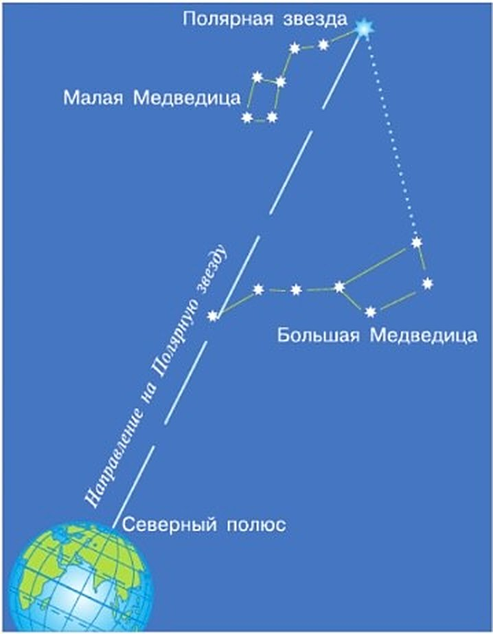
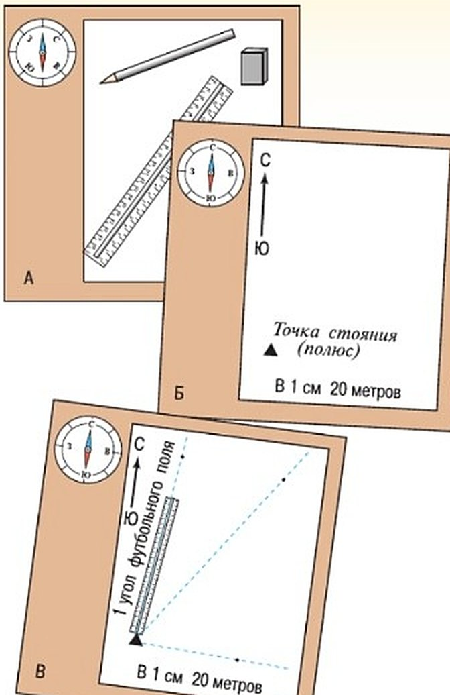
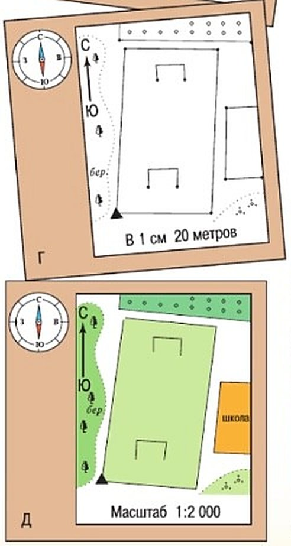
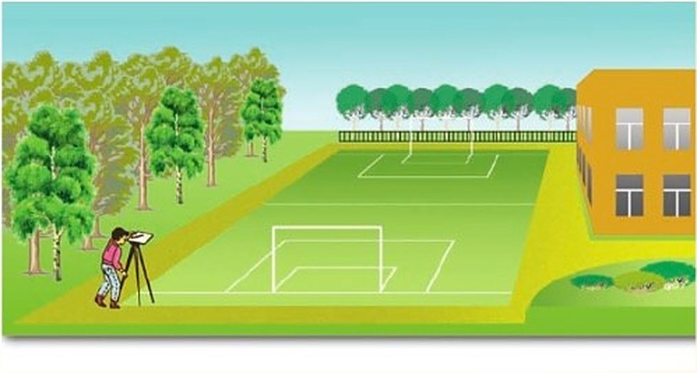

Определяем стороны горизонта по Солнцу и звёздам
По Солнцу. В ясный день стороны горизонта можно найти по Солнцу. Учебник пишет: в России примерно в 13 ч Солнце на юге. Так можно делать в умеренных широтах Северного полушария — там, где Москва.
Север покажет полуденная тень — от дома, дерева, человека. Ведь Солнце в полдень на юге, а тень падает в другую сторону.
По звёздам. Ясной ночью север находят по Большой Медведице и Малой Медведице. Семь звёзд Большой Медведицы похожи на ковш с длинной изогнутой ручкой.
Мысленно соедини линией две звезды на краю ковша. Продолжи её ещё на пять таких же отрезков. Линия упрётся в Малую Медведицу — в Полярную звезду. Она показывает на север (рис. 38).
В ясный, солнечный день можно определить своё положение по Солнцу. В России оно примерно в 13 ч находится на юге. Этот способ применим в умеренных широтах Северного полушария. Определить направление на север можно по полуденной тени, которая падает от любого объекта — здания, дерева, человека.
Безоблачной ночью направление на север можно определить по созвездиям Малая и Большая Медведица. Вы знаете, что семь звёзд Большой Медведицы напоминают ковш с длинной изогнутой ручкой. Мысленно соедините две звезды, расположенные на краю ковша, прямой линией, затем продолжите её на величину пяти расстояний между этими звёздами. Полученное расстояние закончится в созвездии Малая Медведица — там, где находится Полярная звезда, указывающая направление на север (рис. 38).

▲ Найди две звезды на краю ковша и проведи от них пальцем линию до Полярной звезды.
Вспомните из курса «Окружающий мир», какие бывают «живые ориентиры».
1. Почему по полуденной тени можно найти север?
2. Учебник пишет «примерно в 13 ч», а в Москве Солнце на юге около 12:30. Кто прав?
3. Почему именно Полярная звезда показывает на север?
Составляем план местности
Чтобы нарисовать план, проводят съёмку местности. Это развивает наблюдательность, глазомер, память, умение ориентироваться и выделять главное.
Снимают либо из одной точки — полярная съёмка, либо на ходу — маршрутная съёмка. Открытый участок, например школьный двор, снимают полярной съёмкой.
Понадобится: планшет — лист картона или фанеры с бумагой; компас; визирная линейка; карандаш и ластик (рис. 39, А).
1. Выбери масштаб. Смотри, какой участок. Квадрат 100 × 100 м в масштабе 1 : 1000 (в 1 см 10 м) — это 10 × 10 см на плане, а в масштабе 1 : 500 (в 1 см 5 м) — 20 × 20 см.
2. Поставь точку, откуда будешь снимать. Это полюс — отсюда и название «полярная».
3. Сориентируй планшет по компасу. С краю листа проведи линию север — юг и поверни планшет так, чтобы она совпала со стрелкой компаса (рис. 39, Б).
4. Нанеси предметы. Приложи визирную линейку к точке стояния, нацель на предмет — дерево, столб — и прочерти линию. Измерь расстояние рулеткой или шагами и отложи его на линии в масштабе. Отметь предмет условным знаком (рис. 39, В).
5. Так же нанеси всё остальное (рис. 39, Г).
6. Раскрась план цветными карандашами — аккуратно (рис. 39, Д).
Для составления плана проведём съёмку местности. Эта работа требует наблюдательности, умения выделять главное, развивает глазомер, память, умение ориентироваться. Съёмку проводят либо из одной точки (полярная съёмка), либо при движении по местности (маршрутная съёмка). Для съёмки открытого участка, например школьного двора, используют полярную съёмку.
Вам потребуется: а) планшет (лист картона или фанеры) с прикреплённой к нему бумагой; б) компас; в) визирная линейка; г) карандаш и ластик (рис. 39, А).
1. Выбираем масштаб для плана. При этом учитываем размер участка. Например, участок размером 100 × 100 м в масштабе 1 : 1000 (в 1 см 10 м) выглядит на плане как квадрат со сторонами 10 × 10 см, а в масштабе 1 : 500 (в 1 см 5 м) — как квадрат со сторонами 20 × 20 см.
2. Нанесём на лист точку, с которой будем делать съёмку. Эта точка называется полюсом (отсюда название съёмки — полярная).
3. Проводим ориентирование планшета с помощью компаса. Для этого с краю листа проведём линию север—юг и повернём планшет так, чтобы её направление совпало с направлением С—Ю стрелки компаса (рис. 39, Б).
4. Наносим нужные объекты на план. Прикладываем визирную линейку к точке стояния, направляем на объект (дерево, электрический столб и т. д.) и прочерчиваем линию на бумаге. Измеряем рулеткой или шагами расстояние от точки стояния до объекта и откладываем его в масштабе на линии визирования. Отмечаем объект условным знаком (рис. 39, В).
5. Таким же образом наносим остальные объекты, которые нужно изобразить на плане (рис. 39, Г).
6. Окончательно оформляем план цветными карандашами — он должен получиться аккуратным (рис. 39, Д).



▲ Сравни этот двор с планом Д: что на плане показано условными знаками?
4. Чем полярная съёмка отличается от маршрутной? Когда какая нужна?
5. Двор 100 × 100 м нужно нарисовать на альбомном листе (примерно 30 × 21 см). Какой масштаб выберешь — 1 : 1000 или 1 : 500?
6. Зачем перед съёмкой поворачивать планшет по компасу?
Итоги: попробуй сам
В этом параграфе нет вопросов и «Запомните» — он весь практический. Его надо не прочитать, а сделать.
В учебнике у этого параграфа нет вопросов и рубрики «Запомните»: весь параграф — практическая работа.
- Найди север по полуденной тени — в зале, около 12:30. Сверь с компасом.
- В ясный вечер найди ковш Большой Медведицы и по нему — Полярную звезду.
- Узнай длину своего шага: 10 шагов и рулетка.
- Сделай полярную съёмку своего двора или комнаты и раскрась план.
Масштаб и условные знаки для плана — в § 13, а горизонтали, если во дворе есть горка, — в § 14.
Проверь себя
Нажимай по очереди — с первого шага до последнего. Подсказка — раздел «Составляем план местности».
По полуденной тени
В полдень тень показывает на север.
Солнце в полдень — на юге, север за спиной
Нужно солнце.
По Полярной звезде
Под ней — север.
По ковшу Большой Медведицы
Пять отрезков от края ковша.
По Малой Медведице
Полярная — на конце её ручки.
По компасу
Синий конец стрелки — на север днём и ночью.
Из одной точки
Точка стояния — полюс.
На ходу, при движении
Маршрут — путь.
Открытый школьный двор
Виден целиком из одной точки.
Тропинка через лес
Снимают, двигаясь вдоль неё.
Лучи от полюса на предметы
Как на схеме съёмки.
1. Куда показывает тень в полдень?
2. Около скольких часов Солнце на юге в Москве?
3. На сколько отрезков продолжают линию от края ковша до Полярной звезды?
4. В каком созвездии Полярная звезда?
5. Как называется точка, из которой делают полярную съёмку?
6. Участок 100 × 100 м в масштабе 1 : 1000 на плане — это…
Расскажи вслух
Как найти север днём
- В полдень Солнце на юге — в Москве около 12:30 (учебник: в России примерно в 13 ч).
- Тень в полдень падает на север.
- Способ подходит для умеренных широт Северного полушария.
Как найти север ночью
- Найти ковш Большой Медведицы — семь звёзд.
- Через две звезды на краю ковша провести линию и продолжить на пять таких отрезков.
- Линия упрётся в Полярную звезду в Малой Медведице — под ней север.
Как сделать полярную съёмку
- Понадобятся планшет, компас, визирная линейка, карандаш и ластик.
- Выбрать масштаб, поставить полюс, сориентировать планшет по компасу.
- Нанести предметы: луч по линейке, расстояние в масштабе, условный знак; раскрасить.